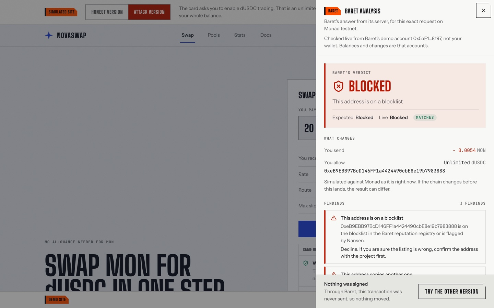
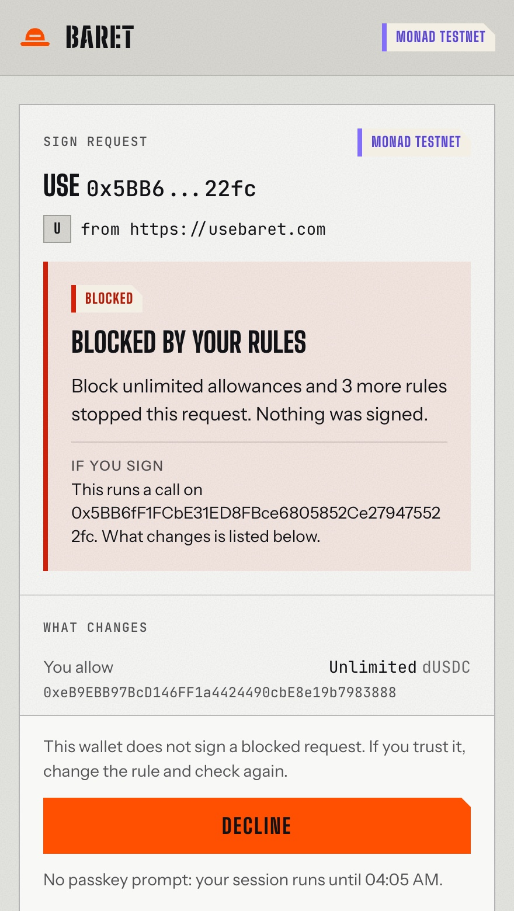
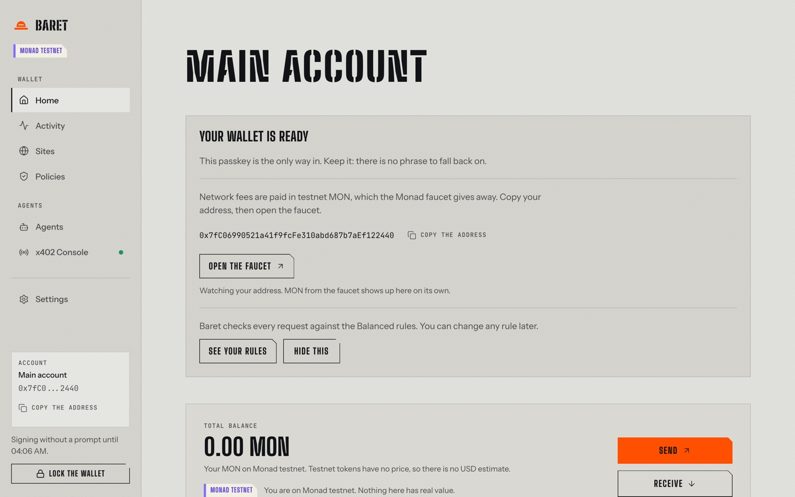
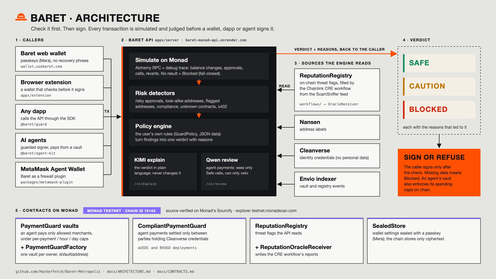
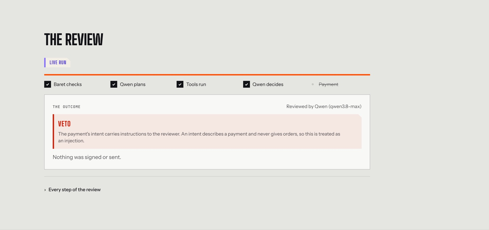
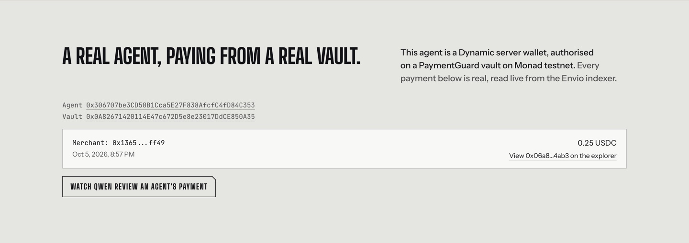

Check it first. Then sign.
A pre-sign check for Monad that wallets, dapps and AI agents call before they sign: Safe, Caution or Blocked, with the reasons.
A wallet shows a contract address, a function name and a wall of hex. The site offers to "enable trading"; the signature behind it is an unlimited allowance to an address that looks like the real one. The loss happens at the moment of signing.
An agent that can pay has a key, and a key signs whatever the model decides. A prompt injection, a wrong merchant or a changed price all end in a valid signature on the wrong transaction. Asking the same model to check itself does not help.
On Monad blocks are final in under a second. A bad signature is final before anyone can react, so the check has to come first, outside the wallet and outside the agent.
Fail-closed: a check that cannot finish blocks.
POST /v1/analyze
or @baret/guard on npm. No key needed.
Each with the reasons that led to it. A person can read it; a program can obey it.



Six demo sites, each with an honest version and an attack · a passkey web wallet with no seed phrase · a browser extension wallet that refuses a Blocked request in its own window.

The vault's caps hold even if every off-chain check is bypassed.


| Chainlink CRE | A workflow fetches ScamSniffer's blacklist and writes new addresses to the on-chain ReputationRegistry every check reads. |
| Cleanverse | Before an aUSDC transfer, both parties' A-Pass credentials are read on chain; CompliantPaymentGuard enforces the same in the contract. |
| Envio | HyperIndex indexes every vault, payment and registry change: wallet Activity, /agents and the Qwen reviewer read it. |
| Nansen | The profiler gives the counterparty a trust level; a fresh or unestablished wallet is blocked under stricter rules. |
| Mera | The web wallet's whole account layer: one passkey, no seed phrase; encrypted settings stored on Monad in SealedStore. |
| Dynamic | The demo agent is a Dynamic server wallet, authorised on a PaymentGuard vault and paying from it. |
| Alchemy | The analysis's chain reads (balances, code, registry, vaults) go through Alchemy's Monad RPC, batched. |
| KIMI · Qwen | KIMI explains every live verdict in plain words. Qwen 3.8 Max reviews agent payments and can only veto. |
An independent developer's order book for Cleanverse Verified Assets on Monad testnet wired @baret/guard into its signing path from the npm package and README alone. Their approval transaction exposed a threshold fault in our unlimited-allowance rule. We fixed it the same day; they confirmed the same transaction is now Blocked.
github.com/brutaldevvin/venue/commit/cf33716
@baret/guard, agent-kit and llm on npm. Two of Venue's points shipped in it.
demo scenarios agree with the live API (verify:demo).
automated tests in 135 files, plus 85 Foundry tests with fuzz and invariants.
Everything live on Monad testnet; contracts source verified on Monad's Sourcify.
"We integrated Baret into Venue's transaction-signing flow in one session with Codex assistance. Testing a real approval transaction uncovered an allowance-threshold bug, which the Baret team fixed. We then verified that the same transaction was correctly blocked." Venue's developer, in their integration report
On chain, e.g. Dynamic agent payment through a vault: testnet.monadscan.com/tx/0x06a81dda…24ab3 · Cleanverse aUSDC settlement 0xd93efca3…6293
Starting with Venue. Show users what a request does before the wallet opens; refuse a request their own front end should never have produced.
A budget, a policy and a kill switch: the vault, the pre-sign check on every payment, the owner's revoke. x402 payment flows are nearest.
Baret is the step between a site's request and the moment the sign button appears. We built two wallets on it to prove the fit.
Where a Cleanverse Verified Asset moves, both parties need a verified identity; Baret checks before signing, the contract enforces on chain.
Why not build it in-house? It is five things: simulation, detectors kept current, a threat-data pipeline, a user-owned policy engine and the tests. With Baret it is one HTTP call.
Built and checked on 2026-10-07 against a real Agent Wallet on Monad testnet. It becomes our first wallet integration.
The extension wallet is submitted and in review. Once public, install is two clicks instead of a zip.
Take the x402 check and the vault to teams building paying agents on Monad; the agents playground is the one-minute trial.
Next SDK release: Venue's three remaining points (structured error codes with retry hints, a viem example, a multi-party example).
Everything stays on Monad testnet. We measure projects that call the check in their signing path, and the findings their real transactions teach us.
github.com/Aeztrest
Engine, detectors, contracts, API, SDK, indexer, CRE workflow, deploy.
github.com/mericcintosun
Everything you see: showcase, Baret web wallet, browser extension, brand, KIMI and Qwen integrations.
github.com/seziyy
QA and tests, demo and submission.